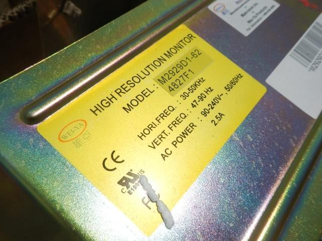
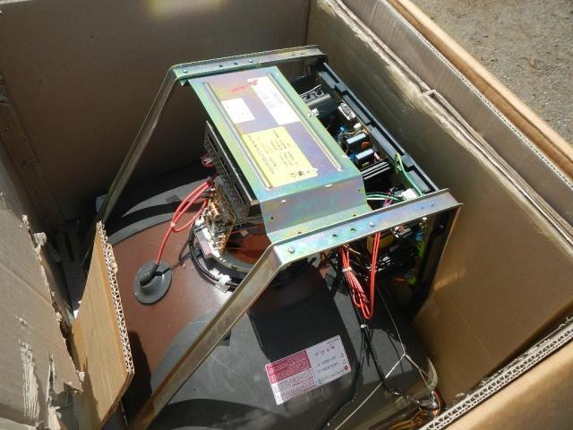
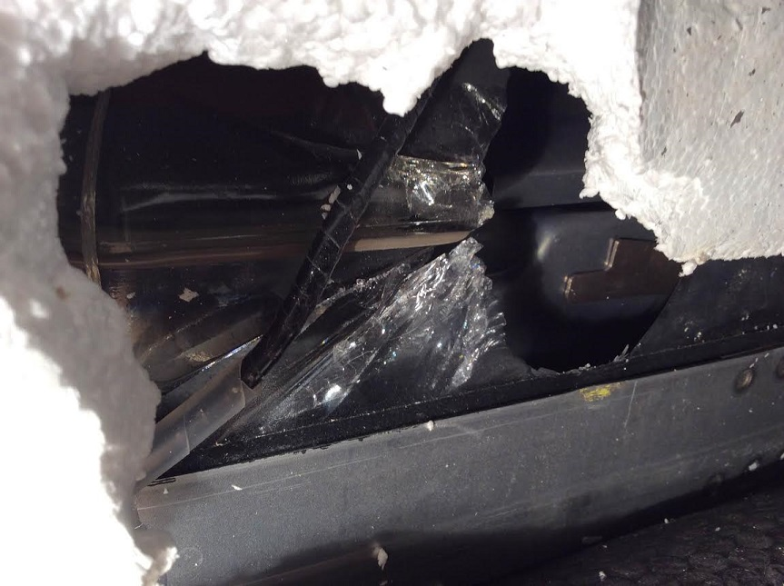
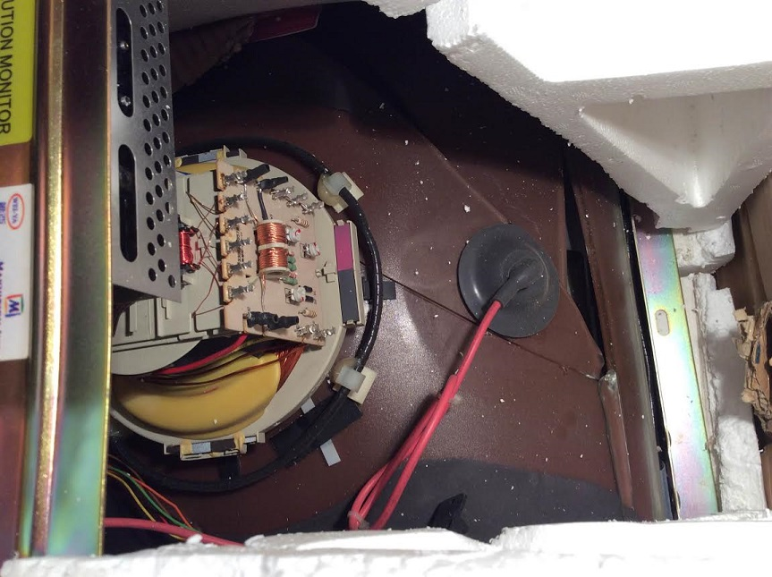
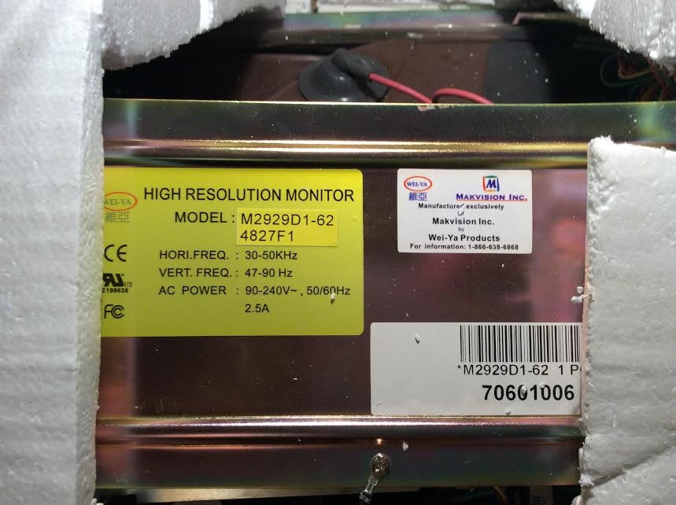

20150406 - End of an Era
A followup with stills from the why I'm using Fedex from now on post...
The
29" Makvision/Wei-ya 30K-50KHZ XGA monitor. Actually the one I found looks like an early 50khz model in the original box, never used, perfect condition!!! Unable to find any of the 50khz models, was super thrilled to finally find one in this condition,


Then UPS Killed It
The last and only "new" 50khz model I could find, destroyed by UPS. Looks like it was dropped on the corner, or rammed by a forklift, causing the tube to implode. Would have been a huge bang, someone probably got a good laugh, then sent the corpse to it's new owner, me. The loss of a CRT is very sad. No one will ever again manufacture them, they are a superior technology forgotten by the world, far better than even the best low persistence flat panels. To avoid another tragic loss like this, do the world a favor and ship with Fedex instead.


